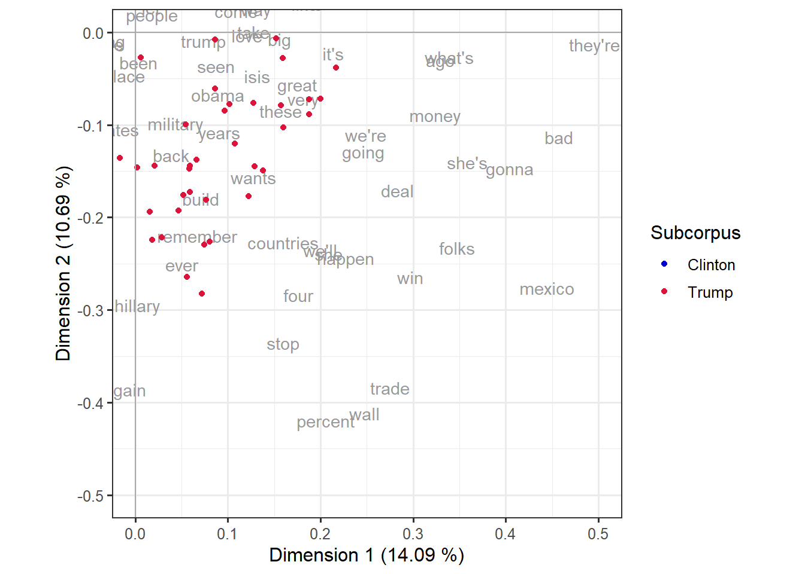

CA applied to the Trump-Clinton speeches
Based on Dirk Speelman’s course material
This document illustrates how to use correspondence analysis (CA) to investigate the similarities between Clinton speeches and Trump speeches in a corpus that collects them. The approach adopts a bird’s-eye perspective, looking at the broad picture we get if we aggregate over a wide range of features of the speeches.
A major advantage of the technique is that we can both compare the different documents based on the selected features, but also compare the features based on the documents they occur in and also see which features or groups of features are the ones that account for the most important dissimilarities between the documents.
We will illustrate four analyses with only minimal differences between each other. In all of them, the workflow consists of collecting frequency lists from each of the files in our corpus and creating a matrix with one row per document and one column per type that occurs in the corpus. The cells contain the occurrence frequency: a cell \(ij\) will contain the occurrence of type \(j\) in the document \(i\). Such matrix of counts will be given to ca::ca(), a function that runs correspondence analysis and returns, among other things, the coordinates of row items and of column items in the principal components as well as the variance covered by each dimension. Section 1.2 will show the full code to obtain the data and plot it before delving into the actual case studies.
The difference between the analyses is the definition of the types collected in the frequency lists. Section 2 will select only function words from a predefined list as features, since they have been shown to reliably discriminate between different authors and registers. Section 3, on the other hand, will rely on high frequency content words by first excluding the types in a stoplist and then only keeping the top 150 items. Finally, Section 4 and Section 5 will use bigrams and trigrams as types, respectively. Section 6 will round up showing how to condense the code of all studies in one shorter script.
1 Setup
For these studies we will need the following R packages: tidyverse, mclm, here and for nice tables when reporting, kableExtra.
1.1 Collect the corpus filenames
First, we collect the names of the corpus files and store them in an object called fnames. From this we also derive the short filenames (stored in short_fnames) and a character vector with, for each filename, the subcorpus (stored in sub_corp). The first variable, short_fnames, is also an fnames object and will provide more practical names for plotting. The second variable, sub_corp, is a character string and will help us assign colors in the plots based on whether the documents correspond to Clinton or Trump speeches. Table 1 illustrates a few of these values.
Don’t forget to adapt the corpus_folder variable with the path to your copy of the corpus!
corpus_folder <- here("studies", "_corpora", "clinton_trump")
fnames <- get_fnames(corpus_folder)
short_fnames <- short_names(fnames)
sub_corp <- fnames %>%
re_retrieve_first("/clinton_trump/([^/]+)", requested_group = 1)Code
| fnames | short_fnames | sub_corp |
|---|---|---|
| /Clinton/Clinton_2016-11-09.txt | Clinton_2016-11-09 | Clinton |
| /Clinton/Clinton_2016-09-29.txt | Clinton_2016-09-29 | Clinton |
| /Clinton/Clinton_2016-11-06-B.txt | Clinton_2016-11-06-B | Clinton |
| /Clinton/Clinton_2016-08-31.txt | Clinton_2016-08-31 | Clinton |
| /Clinton/Clinton_2016-09-30.txt | Clinton_2016-09-30 | Clinton |
| /Clinton/Clinton_2016-10-03.txt | Clinton_2016-10-03 | Clinton |
| /Trump/Trump_2016-09-13-B.txt | Trump_2016-09-13-B | Trump |
| /Trump/Trump_2016-08-19.txt | Trump_2016-08-19 | Trump |
| /Trump/Trump_2016-09-13.txt | Trump_2016-09-13 | Trump |
| /Trump/Trump_2016-10-18.txt | Trump_2016-10-18 | Trump |
| /Trump/Trump_2016-10-11.txt | Trump_2016-10-11 | Trump |
| /Trump/Trump_2016-10-12.txt | Trump_2016-10-12 | Trump |
1.2 General code
The code below will be implemented in each of the case studies below with the only difference in the freqlist() call in line 2 and the actual value of features (in lines 2 and 5).
In practice, if you were to run an analysis where this much code will be used over and over again with multiple modifications, it would be preferable to wrap it in custom functions. Section 6 will show you how, if you’re interested.
d <- map(setNames(fnames, short_fnames), function(fname) {
freqlist(fname, ...)[features]
}) %>%
bind_cols() %>%
data.frame(row.names = features) %>%
as.matrix() %>%
t() %>%
drop_empty_rc()
d_ca <- ca(d)
texts_df <- row_pcoord(d_ca)[,c(1, 2)] %>%
as_tibble(rownames = "text") %>%
mutate(Subcorpus = sub_corp)
words_df <- col_pcoord(d_ca)[,c(1, 2)] %>%
as_tibble(rownames = "word")
dim_1 <- sprintf("Dimension 1 (%.2f %%)", summary(d_ca)$scree[1,3])
dim_2 <- sprintf("Dimension 2 (%.2f %%)", summary(d_ca)$scree[2,3])
ggplot(words_df, aes(x = V1, y = V2)) +
geom_text(aes(label = word), color = "gray60") +
geom_point(data = texts_df, aes(color = Subcorpus)) +
scale_color_manual(values = c("#0000CD","#DC143C")) +
geom_hline(yintercept = 0, color = "darkgray") +
geom_vline(xintercept = 0, color = "darkgray") +
theme_bw(base_size = 12) +
labs(x = dim_1, y = dim_2) +
coord_fixed()The first part of the code builds the matrix that we will apply the correspondence analysis to. This is an object of the data type matrix with as its rows the files and as its columns the features, and in the cells the absolute frequencies of the features in the files.
The code in lines 1-3 uses the map() function from the purrr package to apply the same process to each file in the corpus, returning a comparable output. This output is a frequency list computed with freqlist() and then adjusted to return values for all and only the elements in the features vector, which will be different in each study. The output of map() is a list, and we will combine its elements into a tibble with one column per file by means of bind_cols() in line 4. Because we named the files with the short names in line 1, via the setNames() call, the column names are the elements in short_fnames. Line 5 turns the tibble into a dataframe so we can define features as the row names.
Lines 6-8 turn this dataframe into a matrix, transpose it (so that the features become the columns and the files, the rows) and drop the rows and columns with only zero frequencies.
In line 10, we run correspondence analysis on this matrix, which we store in the variable d_ca. We could then inspect it by calling d_ca or summary(d_ca).
Then, lines 12-17 extract the coordinates of the rows and columns for plotting and create tibbles with the labels, positions and, in the case of the rows, the color coding based on the subcorpora. mclm::row_pcoord() and mclm::col_pcoord() extract the coordinates of the rows and columns from the object d_ca; we are only interested in the first two columns, which are the coordinates of the two first principal components, therefore we add [,c(1,2)]. We then turn the matrix into a tibble assigning the column names “text” and “word” to the row names of the matrices. In the case of the documents, we also add the color coding column by creating a column “Subcorpus” and filling it with the vector sub_corp.
Lines 19 and 20 use the variance information from summary(d_ca) to enrich the labels of the axes in the plot. The rest of the lines create a biplot.
ggplot() call
What does each line from 22 to 30 do in the code chunk above?
Line 22 calls
ggplot()with the dataframe of features (the columns in our matrix) as dataset, assigning the variables “V1” and “V2” to thexandycoordiantes respectively. These are the automatic names given byas_tibble()in line 17 when we converted a matrix without column names1.Line 23 plots the items of the variable “word” (the types of our features) as text, in the color “gray60”.
Line 24 plots the items of the dataframe of documents (the rows of the original matrix) as dots. The call inherits the
xandymappings from theggplot()call, so that “V1” and “V2” will automatically be mapped into the axes. In addition, we map “Subcorpus” to the color aesthetics.Line 25 defines manually the colors to map to the “Subcorpus” variable. We could also use a variety of palettes, different colors, or remove the line and use the default color scheme of ggplot2.
Lines 26 and 27 add a horizontal and vertical line respectively, the former where \(y = 0\) and the latter where \(x = 0\), both in dark gray.
Line 28 sets the theme and the base size for the font. If you create multiple plots, you can set this for all your plots with
theme_set().Line 29 assigns the variables
dim_1anddim_2, defined in lines 19 and 20, as the labels of thexandyaxes.Line 30 indicates that the units of both axes should be the same, which is not the default case for ggplot2 plots. The numbers themselves of the coordinates are not meaningful, but the distances between the points are, and they assume that the distance between the point in \((0,1)\) (where \(x = 0\) and \(y = 1\)) and the centroid \((0, 0)\) is the same as the distance between the point \((1,0)\) and the centroid \((0,0)\).
coord_fixed()makes sure that’s the case.
2 Function words as features
In a first approach, we use so-called function words as features. In the field of stylometry, which is devoted to the quantitative study of linguistics style (e.g. in support of authorship attribution), it has long been established that function words are a powerful instrument in support of the identification of typical or even unique characteristics of the style of a specific author (or group of authors).
Zooming in on function words steers the analysis away from differences related to topic/content and foregrounds differences related to style. Other alternatives are:
Zooming in on longer n-grams, e.g. 3-grams, 4-grams.
If the information is available, looking at the frequencies of POS tags or POS tag n-grams.
Looking at derived features such as lexical density, word length, sentence length, etc.
2.1 Specifying the features
We start by reading the names of the features for this analysis from the file function-words.txt and storing then into an object called features.
features <- read_types(here("studies", "assets", "ca-trump-clinton", "function-words.txt"))
print(features, n = 10)Type collection of length 149
type
-------
1 about
2 across
3 against
4 along
5 around
6 at
7 behind
8 beside
9 besides
10 by
...As shown when printing it, the object features contains 149 function words.2
2.2 Building the file-by-feature matrix
Once we have collected our features we can create the matrix with one row per document and one column per feature.
The top-left part of the resulting matrix (first ten rows, first ten columns) is shown in Table 2. Each row is a speech, each column is a function word, and the values are the absolute frequencies of a given function word in a igven document.
Code
kbl(d[1:10, 1:10]) %>% kable_paper()| about | across | against | along | around | at | behind | besides | by | despite | |
|---|---|---|---|---|---|---|---|---|---|---|
| Clinton_2016.07.28 | 11 | 4 | 3 | 1 | 3 | 26 | 1 | 0 | 20 | 0 |
| Clinton_2016.07.29 | 24 | 4 | 0 | 0 | 2 | 8 | 1 | 0 | 7 | 0 |
| Clinton_2016.08.01 | 7 | 3 | 0 | 0 | 1 | 3 | 0 | 0 | 2 | 0 |
| Clinton_2016.08.05 | 22 | 5 | 3 | 1 | 5 | 30 | 4 | 0 | 17 | 0 |
| Clinton_2016.08.10 | 19 | 3 | 0 | 1 | 2 | 5 | 0 | 0 | 9 | 0 |
| Clinton_2016.08.11 | 18 | 10 | 4 | 1 | 3 | 23 | 2 | 0 | 17 | 0 |
| Clinton_2016.08.15 | 41 | 4 | 6 | 2 | 5 | 30 | 0 | 0 | 18 | 0 |
| Clinton_2016.08.16 | 16 | 5 | 0 | 1 | 1 | 7 | 0 | 0 | 4 | 0 |
| Clinton_2016.08.17 | 34 | 4 | 1 | 0 | 0 | 19 | 0 | 0 | 7 | 0 |
| Clinton_2016.08.25 | 17 | 2 | 3 | 0 | 2 | 9 | 0 | 0 | 11 | 0 |
2.3 Running correspondence analysis
Then we run the actual correspondence analysis and store the result in an object called d_ca. For reasons of brevity, we will skip the inspection of the summary report of the analysis, which we would normally do with summary(d_ca).
d_ca <- ca(d)
# summary(d_ca)2.4 Biplot
Next, we build the biplot, with color indicating the subcorpus that each file belongs to. First, we prepare the data needed for the plot. If you wanted to inspect the full output of row_pcoord() or col_pcoord(), you can run them separately first (e.g. row_pcoord(d_ca) %>% View()).
texts_df <- row_pcoord(d_ca)[,c(1, 2)] %>%
as_tibble(rownames = "text") %>%
mutate(Subcorpus = sub_corp)
words_df <- col_pcoord(d_ca)[,c(1, 2)] %>%
as_tibble(rownames = "word")Table 3 shows a random sample from texts_df and words_df, i.e. the rows and columns of the dataset with their principal component coordinates and the corpus they correspond to. The columns “V1” and “V2” contain the positions in the first and second dimension respectively. In Table 3 (a) we can already see that Clinton documents tend to be in the bottom half of the plot (“V2” is negative), whereas Trump documents tend to be in the top half (“V2” is positive).
Code
set.seed(2022)
texts_df %>% group_by(Subcorpus) %>%
slice_sample(n = 5) %>% kbl() %>%
kable_paper(full_width = FALSE)
words_df %>%
slice_sample(n = 10) %>% kbl() %>%
kable_paper(full_width = FALSE)Table 3: Subset of speeches and function words with principal components.
| text | V1 | V2 | Subcorpus |
|---|---|---|---|
| Clinton_2016.11.09 | 0.0472921 | -0.1750603 | Clinton |
| Clinton_2016.09.06 | -0.0619775 | -0.1397667 | Clinton |
| Clinton_2016.08.31 | 0.0980152 | -0.2038008 | Clinton |
| Clinton_2016.08.05 | -0.1063086 | -0.1732206 | Clinton |
| Clinton_2016.08.11 | -0.0171809 | -0.2379479 | Clinton |
| Trump_2016.10.31 | 0.1000379 | 0.0894802 | Trump |
| Trump_2016.11.07.B | -0.0041106 | 0.1529944 | Trump |
| Trump_2016.08.15 | 0.3388391 | -0.1418274 | Trump |
| Trump_2016.08.02 | -0.1862853 | 0.1850968 | Trump |
| Trump_2016.10.14.B | -0.0731448 | 0.1318714 | Trump |
| word | V1 | V2 |
|---|---|---|
| while | 0.1871077 | 0.0183116 |
| about | -0.1634588 | -0.1360846 |
| they | -0.1100616 | 0.3573612 |
| he | -0.4679407 | -0.3371612 |
| after | 0.2224265 | -0.1108768 |
| might | -0.3473552 | -0.2371209 |
| what | -0.1722558 | -0.0841692 |
| during | -0.0927357 | 0.1178028 |
| themselves | -0.0473160 | -0.3076619 |
| therefore | -0.5136063 | -0.2700845 |
The plot is shown in Figure 1. We can see that 16.61% of the variation is covered by the first dimension and 12.99% by the second dimension. In addition, both subcorpora form very clear clusters, mostly divided by the second dimension: features higher on the y-axis are more characteristic of Trump’s speeches, and those lower on the y-axis are more characteristic of Clinton’s, as we could already see from Table 3 (a).
dim_1 <- sprintf("Dimension 1 (%.2f%%)", summary(d_ca)$scree[1,3])
dim_2 <- sprintf("Dimension 2 (%.2f%%)", summary(d_ca)$scree[2,3])
ggplot(words_df, aes(x = V1, y = V2)) +
geom_text(aes(label = word), color = "gray60") +
geom_point(data = texts_df, aes(color = Subcorpus)) +
scale_color_manual(values = c("#0000CD","#DC143C")) +
geom_hline(yintercept = 0, color = "darkgray") +
geom_vline(xintercept = 0, color = "darkgray") +
theme_bw(base_size = 12) +
labs(x = dim_1, y = dim_2) +
coord_fixed()2.5 Typical Clinton features vs. typical Trump features
Since the dimension that sets apart the Clinton speeches (top) most clearly from the Trump speeches (bottom) is the second dimension (y-axis), we may want to inspect the features that occupy extreme positions on the y-axis (and that hence contribute importantly to the y-axis).
The code below sorts the dataframe with features information based on their coordinates in the second dimension (“V2”, i.e. the vertical axis) and extracts the first 20 elements. clinton_words and trump_words are thus vectors with the 20 words most characteristic of Clinton’s and Trump’s speeches respectively.
The markdown text below adds asterisks to each word to print them in italics and brings them together in an enumeration with the help of glue::glue_collapse(), resulting in the text right below it.
The words most characteristic of Clinton's speeches are
`r glue::glue_collapse(paste0("*", clinton_words, "*"), sep = ", ", last = " and ")`.
Those most characteristic of Trump's speeches, instead, are
`r glue::glue_collapse(paste0("*", trump_words, "*"), sep = ", ", last = " and ")`.The words most characteristic of Clinton’s speeches are someone, himself, toward, each, shall, everyone, ourselves, ours, his, anyone, often, several, own, across, both, sometimes, whose, may, should and my. Those most characteristic of Trump’s speeches, instead, are anyway, little, mine, they, over, twice, myself, second, anything, though, otherwise, onto, along, never, such, them, her, two, but and ones.
3 High frequency content words as features
In a second approach, we look at content words instead. Obviously, then, topic will start playing an important role (although some stylistic differences may still be present in the patterns that emerge). The nature of this analysis is very different to the one shown in Section 2, and it serves different purposes. Even so, it is a legitimate question whether the Clinton speeches and the Trump speeches turn out to be as clearly separated as in the previous analysis from the perspective of content words. Moreover, we can inspect which (groups of) content words will emerge as the ones that are most characteristic of the different areas in the resulting map.
3.1 Specifying the features
From a technical perspective, the only difference with the case study in Section 2 is how we define the features. This time, we build a complete frequency list of the whole corpus, we then remove a number of stop words (mostly function words, but also some undesired types such as 000 and --), and finally we treat the top 150 (i.e. the 150 highest frequency items) of the remaining items as our features. The number 150 is an arbitrary choice but it makes this study more comparable to the one in Section 2.
stop_list <- read_types(here("studies", "assets", "ca-trump-clinton", "stop_list.txt"))
print(stop_list, n = 5)Type collection of length 154
type
-------
1 000
2 about
3 across
4 against
5 along
...features <- freqlist(fnames) %>%
drop_types(stop_list) %>%
keep_pos(1:150) %>%
as_types() %>%
print(n = 10)Type collection of length 150
type
---------
1 again
2 ago
3 also
4 america
5 american
6 americans
7 applause
8 are
9 audience
10 back
...3.2 Next steps and plot
The next steps, all the way up to the creation of the plot, are completely analogous to the previous analysis.
d <- map(setNames(fnames, short_fnames), function(fname) {
freqlist(fname)[features]
}) %>%
bind_cols() %>%
data.frame(row.names = features) %>%
as.matrix() %>%
t() %>%
drop_empty_rc()
d_ca <- ca(d)
texts_df <- row_pcoord(d_ca)[,c(1, 2)] %>%
as_tibble(rownames = "text") %>%
mutate(Subcorpus = sub_corp)
words_df <- col_pcoord(d_ca)[,c(1, 2)] %>%
as_tibble(rownames = "word")Table 4 shows again a random subset of documents with their new coordinates, as well as a random subset of features —this time content words— and their coordinates. Figure 2 shows the biplot.
Code
set.seed(2022)
texts_df %>% group_by(Subcorpus) %>%
slice_sample(n = 5) %>% kbl() %>%
kable_paper(full_width = FALSE)
words_df %>%
slice_sample(n = 10) %>% kbl() %>%
kable_paper(full_width = FALSE)Table 4: Subset of speeches and content words with principal components.
| text | V1 | V2 | Subcorpus |
|---|---|---|---|
| Clinton_2016.11.09 | -0.4261368 | 0.0843955 | Clinton |
| Clinton_2016.09.06 | -0.2692764 | 0.1529539 | Clinton |
| Clinton_2016.08.31 | -0.4620391 | 0.0589428 | Clinton |
| Clinton_2016.08.05 | -0.2577882 | 0.3072020 | Clinton |
| Clinton_2016.08.11 | -0.4792801 | 0.0970303 | Clinton |
| Trump_2016.10.31 | 0.0593353 | -0.1727285 | Trump |
| Trump_2016.11.07.B | 0.1602217 | -0.1026059 | Trump |
| Trump_2016.08.15 | -0.2888413 | -0.0287607 | Trump |
| Trump_2016.08.02 | 0.3474765 | 0.1105980 | Trump |
| Trump_2016.10.14.B | 0.1594495 | -0.0278322 | Trump |
| word | V1 | V2 |
|---|---|---|
| talk | -0.0728850 | 0.2705457 |
| again | -0.0107773 | -0.3857531 |
| great | 0.1749042 | -0.0561112 |
| doesn't | -0.0225670 | 0.1318185 |
| put | -0.0909718 | -0.0302617 |
| think | 0.0991768 | 0.3251066 |
| say | 0.1411930 | 0.1319127 |
| been | 0.0034804 | -0.0325135 |
| i've | -0.0535805 | 0.3076036 |
| win | 0.2972385 | -0.2643769 |
dim_1 <- sprintf("Dimension 1 (%.2f %%)", summary(d_ca)$scree[1,3])
dim_2 <- sprintf("Dimension 2 (%.2f %%)", summary(d_ca)$scree[2,3])
ggplot(words_df, aes(x = V1, y = V2)) +
geom_text(aes(label = word), color = "gray60") +
geom_point(data = texts_df, aes(color = Subcorpus)) +
scale_color_manual(values = c("#0000CD","#DC143C")) +
geom_hline(yintercept = 0, color = "darkgray") +
geom_vline(xintercept = 0, color = "darkgray") +
theme_bw(base_size = 12) +
labs(x = dim_1, y = dim_2) +
coord_fixed()We can see that 14.09% of the variation is covered by the first dimension and 10.69% by the second dimension. This time it is the combination of the two dimensions that sets apart the two groups of speeches. This makes it a bit more difficult to select the items on the basis of their coordinates. One approach is to select quadrants or regions, either to zoom in on the plot (Figure 3) or to obtain a selection of words.
ggplot(words_df, aes(x = V1, y = V2)) +
geom_text(aes(label = word), color = "gray60") +
geom_point(data = texts_df, aes(color = Subcorpus)) +
scale_color_manual(values = c("#0000CD","#DC143C")) +
geom_hline(yintercept = 0, color = "darkgray") +
geom_vline(xintercept = 0, color = "darkgray") +
theme_bw(base_size = 12) +
labs(x = dim_1, y = dim_2) +
coord_fixed(xlim = c(0, 0.5), ylim = c(-0.5, 0))
We can also compute the euclidean distance from each point to the center of the plot to identify the items that are farthest from it (the dist_to_center variable). The code below selects all words in the bottom right quadrant (even beyond the zoomed-in region in Figure 3) and order thems by distance to the center; the markdown text below it lists some of them, resulting in the block text underneath.
There are `r length(bottom_right)` words in the bottom right quadrant of @fig-content;
the fifteen farthest from the center of the plot are
`r glue::glue_collapse(paste0("*", head(bottom_right, 15), "*"), sep = ", ", last = " and ")`.There are 42 words in the bottom right quadrant of Figure 2; the fifteen farthest from the center of the plot are booing, mexico, they’re, wall, trade, bad, percent, gonna, folks, win, she’s, stop, what’s, money and four.
4 High frequency bigrams as features
In our third approach, we work with the 150 most frequent bigrams. In the code snippet below we use the argument ngram_size = 2 to make sure that freqlist() builds a frequency list of bigrams instead of single word forms. In addition, prior to identifying the top 150, we remove all bigrams with either applause, cheering, or -- in them. We do this because in this corpus those items are (almost always) part of the annotation instead of real tokens.
features <- fnames %>%
freqlist(ngram_size = 2) %>%
drop_re("(applause|cheering|--)") %>%
keep_bool(ranks(.) <= 150) %>% # or keep_pos(1:150)
as_types() %>%
print(n = 10)Type collection of length 150
type
--------
1 a_great
2 a_lot
3 a_very
4 about_it
5 all_of
6 all_the
7 and_he
8 and_i
9 and_it
10 and_it's
...The rest of the steps again are identical to the previous analyses, except that when we build frequency lists for each file, we must make sure that here too we build a frequency list of bigrams.
The step drop_re("(applause|cheering|--)") is not necessary when collecting those frequency lists, as the elements are already filtered via [features].
d <- map(setNames(fnames, short_fnames), function(fname) {
freqlist(fname, ngram_size = 2)[features]
}) %>%
bind_cols() %>%
data.frame(row.names = features) %>%
as.matrix() %>%
t() %>%
drop_empty_rc()
d_ca <- ca(d)
texts_df <- row_pcoord(d_ca)[,c(1, 2)] %>%
as_tibble(rownames = "text") %>%
mutate(Subcorpus = sub_corp)
words_df <- col_pcoord(d_ca)[,c(1, 2)] %>%
as_tibble(rownames = "word")Table 5 shows again a random subset of documents with their new coordinates, as well as a random subset of features —this time bigrams— and their coordinates. Figure 4 shows the biplot.
Code
set.seed(2022)
texts_df %>% group_by(Subcorpus) %>%
slice_sample(n = 5) %>% kbl() %>%
kable_paper(full_width = FALSE)
words_df %>%
slice_sample(n = 10) %>% kbl() %>%
kable_paper(full_width = FALSE)Table 5: Subset of speeches and bigrams with principal components.
| text | V1 | V2 | Subcorpus |
|---|---|---|---|
| Clinton_2016.11.09 | -0.3062404 | 0.5275794 | Clinton |
| Clinton_2016.09.06 | -0.4765587 | 0.0324082 | Clinton |
| Clinton_2016.08.31 | -0.4060061 | 0.4555704 | Clinton |
| Clinton_2016.08.05 | -0.4342003 | 0.1015003 | Clinton |
| Clinton_2016.08.11 | -0.4210594 | 0.3193115 | Clinton |
| Trump_2016.10.31 | 0.1165751 | 0.0660741 | Trump |
| Trump_2016.11.07.B | 0.2390049 | -0.1108757 | Trump |
| Trump_2016.08.15 | 0.1207544 | 0.6317010 | Trump |
| Trump_2016.08.02 | 0.0011517 | -0.3600040 | Trump |
| Trump_2016.10.14.B | 0.1264469 | -0.2168820 | Trump |
| word | V1 | V2 |
|---|---|---|
| think_of | 0.2827760 | -0.2387252 |
| a_great | 0.1940866 | -0.1546208 |
| i_want | -0.7886084 | 0.1443159 |
| for_the | 0.1143942 | 0.3411274 |
| the_american | 0.0132712 | 0.5484510 |
| to_make | -0.3157716 | 0.0683634 |
| the_same | -0.0302904 | 0.3890896 |
| and_the | -0.0960387 | 0.2063551 |
| in_this | -0.1470086 | 0.3218153 |
| with_the | 0.1392118 | 0.0295794 |
dim_1 <- sprintf("Dimension 1 (%.2f %%)", summary(d_ca)$scree[1,3])
dim_2 <- sprintf("Dimension 2 (%.2f %%)", summary(d_ca)$scree[2,3])
ggplot(words_df, aes(x = V1, y = V2)) +
geom_text(aes(label = word), color = "gray60") +
geom_point(data = texts_df, aes(color = Subcorpus)) +
scale_color_manual(values = c("#0000CD","#DC143C")) +
geom_hline(yintercept = 0, color = "darkgray") +
geom_vline(xintercept = 0, color = "darkgray") +
theme_bw(base_size = 12) +
labs(x = dim_1, y = dim_2) +
coord_fixed()We can see that 14.29% of the variation is covered by the first dimension and 12.50% by the second dimension. Moreover, Clinton’s speeches are tightly grouped on the left side of the plot whereas Trump’s extend over the right side, so the x-axis is now the relevant dimension. The code below sorts the dataframe with features information based on their coordinates in the first dimension (“V1”, i.e. the horizontal axis) and extracts the first 20 elements. clinton_bg and trump_bg are thus vectors with the 20 bigrams most characteristic of Clinton’s and Trump’s speeches respectively.
The bigrams most characteristic of Clinton's speeches are
`r glue::glue_collapse(paste0("*", clinton_bg, "*"), sep = ", ", last = " and ")`.
Those most characteristic of Trump's speeches, instead, are
`r glue::glue_collapse(paste0("*", trump_bg, "*"), sep = ", ", last = " and ")`.The bigrams most characteristic of Clinton’s speeches are what_i, i_want, that_is, you_can, we_can, donald_trump, i_am, got_to, i_know, to_work, if_you, we_need, go_to, all_the, and_that, that_we, and_he, i_was, to_say and and_i. Those most characteristic of Trump’s speeches, instead, are trump_trump, make_america, believe_me, to_happen, we_will, it’s_going, you’re_going, to_win, are_going, you_thank, very_much, care_of, hillary_clinton, not_going, this_country, will_be, we_don’t, think_of, these_are and do_you.
5 High frequency trigrams as features
In our third approach, we work with the 150 most frequent trigrams — the workflow is the same as in Section 4, but ngram_size must now be set to 3 instead of 2.
features <- fnames %>%
freqlist(ngram_size = 3) %>%
drop_re("(applause|cheering|--)") %>%
keep_bool(ranks(.) <= 150) %>% # or keep_pos(1:150)
as_types() %>%
print(n = 10)Type collection of length 150
type
----------------------
1 a_couple_of
2 a_long_time
3 a_lot_of
4 a_trump_administration
5 all_of_the
6 all_of_you
7 all_over_the
8 america_great_again
9 and_by_the
10 and_hillary_clinton
...d <- map(setNames(fnames, short_fnames), function(fname) {
freqlist(fname, ngram_size = 3)[features]
}) %>%
bind_cols() %>%
data.frame(row.names = features) %>%
as.matrix() %>%
t() %>%
drop_empty_rc()
d_ca <- ca(d)
texts_df <- row_pcoord(d_ca)[,c(1, 2)] %>%
as_tibble(rownames = "text") %>%
mutate(Subcorpus = sub_corp)
words_df <- col_pcoord(d_ca)[,c(1, 2)] %>%
as_tibble(rownames = "word")Table 6 shows again a random subset of documents with their new coordinates, as well as a random subset of features —this time trigrams— and their coordinates. Figure 5 shows the biplot.
Code
set.seed(2022)
texts_df %>% group_by(Subcorpus) %>%
slice_sample(n = 5) %>% kbl() %>%
kable_paper(full_width = FALSE)
words_df %>%
slice_sample(n = 10) %>% kbl() %>%
kable_paper(full_width = FALSE)Table 6: Subset of speeches and trigrams with principal components.
| text | V1 | V2 | Subcorpus |
|---|---|---|---|
| Clinton_2016.11.09 | -0.6095332 | 0.7959658 | Clinton |
| Clinton_2016.09.06 | -0.9488437 | -0.1244524 | Clinton |
| Clinton_2016.08.31 | -1.1755695 | 0.6056259 | Clinton |
| Clinton_2016.08.05 | -0.7943022 | 0.0043116 | Clinton |
| Clinton_2016.08.11 | -0.6841211 | 0.1809109 | Clinton |
| Trump_2016.10.31 | 0.1647120 | 0.1946402 | Trump |
| Trump_2016.11.07.B | 0.2561010 | -0.0758231 | Trump |
| Trump_2016.08.15 | 0.2837312 | 0.8632088 | Trump |
| Trump_2016.08.02 | -0.1014379 | -0.4964737 | Trump |
| Trump_2016.10.14.B | 0.1620511 | -0.2630311 | Trump |
| word | V1 | V2 |
|---|---|---|
| to_have_a | -0.1518327 | -0.2802206 |
| a_couple_of | 0.0244926 | -0.6163659 |
| hillary_clinton_is | 0.4798830 | 0.4714349 |
| for_our_country | -0.1323530 | 0.4128090 |
| the_history_of | 0.3043229 | 0.0339088 |
| usa_usa_usa | 0.6682345 | 0.4832611 |
| they_want_to | 0.0399990 | -0.4315310 |
| and_i_said | 0.0593379 | -0.6906045 |
| i'm_going_to | -0.1174069 | -0.0887996 |
| you_know_i | -0.6027103 | -0.4392379 |
dim_1 <- sprintf("Dimension 1 (%.2f %%)", summary(d_ca)$scree[1,3])
dim_2 <- sprintf("Dimension 2 (%.2f %%)", summary(d_ca)$scree[2,3])
ggplot(words_df, aes(x = V1, y = V2)) +
geom_text(aes(label = word), color = "gray60") +
geom_point(data = texts_df, aes(color = Subcorpus)) +
scale_color_manual(values = c("#0000CD","#DC143C")) +
geom_hline(yintercept = 0, color = "darkgray") +
geom_vline(xintercept = 0, color = "darkgray") +
theme_bw(base_size = 12) +
labs(x = dim_1, y = dim_2) +
coord_fixed()We can see that 12.48% of the variation is covered by the first dimension and 8.53% by the second dimension. Like in Figure 4, Clinton’s speeches are tightly grouped on the left side of the plot whereas Trump’s extend over the right side, so the x-axis is now the relevant dimension. The code below sorts the dataframe with features information based on their coordinates in the first dimension (“V1”, i.e. the horizontal axis) and extracts the first 10 elements. clinton_tg and trump_tg are thus vectors with the 10 trigrams most characteristic of Clinton’s and Trump’s speeches respectively.
The trigrams most characteristic of Clinton's speeches are
`r glue::glue_collapse(paste0("*", clinton_tg, "*"), sep = ", ", last = " and ")`.
Those most characteristic of Trump's speeches, instead, are
`r glue::glue_collapse(paste0("*", trump_tg, "*"), sep = ", ", last = " and ")`.The trigrams most characteristic of Clinton’s speeches are i_want_you, to_make_sure, we_need_to, we’ve_got_to, want_you_to, and_i_want, want_to_be, i_want_to, all_of_you and want_to_thank. Those most characteristic of Trump’s speeches, instead, are her_up_lock, up_lock_her, lock_her_up, trump_administration_will, a_trump_administration, usa_usa_usa, will_make_america, trump_trump_trump, build_the_wall and we_will_make.
If you’re curious about a specific item, you can use mclm::conc() to collect its occurrences, as shown in Table 7. Notice that even infrequent expressions can be considered typical if they are significantly more frequent in one group of documents than in the other.
Code
conc(fnames, r"--[(?xi) i \s+ want \s+ you]--") %>%
as_tibble() %>%
select(source, left, match, right) %>%
mutate(source = short_names(source)) %>%
kbl(align = c("r", "r", "c", "l")) %>%
kable_paper(font_size = 15) %>%
scroll_box(height = "400px")| source | left | match | right |
|---|---|---|---|
| Clinton_2016-07-28 | r hearts and souls into our primary. <APPLAUSE> You've put economic and social justice issues front and center where they belong. <APPLAUSE> And to all of your supporters here and around the country, | I want you | to know I've heard you. Your cause is our cause. <APPLAUSE> Our country needs your ideas, energy and passion. That is the only way we can turn our progressive platform into real change for America. < |
| Clinton_2016-08-01 | ot respected, that the dignity of their job is not something that we all support. I know a lot of people who feel that way. I bet there are some in this gymnasium who feel that way. Well, here's what | I want you | to know. You deserve a president who will get up every single day in the White House and do everything she can to give you the chance you deserve to have. <CHEERING AND APPLAUSE> <AUDIENCE: Hillary! |
| Clinton_2016-08-05 | . But I do have this old fashioned idea, when you run for President you ought to tell the voters of America what you would do as President. So, I am going to keep telling you what I would do, because | I want you | to hold me accountable, press and citizen alike. Because the stakes are as high as they've ever been in our lifetimes. And we all have to do our part. So, thank you for what you do everyday. Thank yo |
| Clinton_2016-08-10 | k in April, to learn what's on the minds of Iowans and to figure out what you need from the next president. Now, I know that any election is hard. It's filled with unpredictable twists and turns. But | I want you | to imagine what you will feel like the day after that election if we have not come together to chart a course of confidence and optimism that will really get our economy working for everyone, keep us |
| Clinton_2016-08-11 | ne at the table, not just republicans and democrats, but businesses and labor unions, academics but most importantly Americans like all you. I think there are a lot of great ideas out in America. And | I want you | to have a say. And that means, we've got to get unaccountable money out of politics, overturn Citizens United, and expand voting rights, not restrict them. I intend, starting even before the election |
| Clinton_2016-08-11 | tay active and engaged and working together to create jobs and to strengthen your own communities. And I hope you will work to get out the vote in November, because if we - if we are able to win then | I want you | all to work with me to build the kind of progress that America deserves to see. We're going do this together. We are stronger together. Let's go out and build the future. Thank you all, God bless you |
| Clinton_2016-08-15 | y be the different between the Irish Catholic and the Methodist piece here, we wear everything on our sleeve. I don't think they fully understand how passionate she is about what she does. I've known | I want you | to listen just for a minute. I don't even want you to clap. I want you; because I want to make sure you understand what I know about her. You know she understands that, that college loan to get a bri |
| Clinton_2016-08-15 | ere, we wear everything on our sleeve. I don't think they fully understand how passionate she is about what she does. I've known I want you to listen just for a minute. I don't even want you to clap. | I want you | ; because I want to make sure you understand what I know about her. You know she understands that, that college loan to get a bright young girl or boy to school is about a lot more than whether or not |
| Clinton_2016-08-16 | ut what I want to do. I know that some people make fun of me. They say, oh she has all these plans, and you can go to my website and read my plans. But I'll tell you - you know why I do that? Because | I want you | to know what I'm going to try to do so you can both help me and hold me accountable for doing what I told you I want to do. <APPLAUSE> We want to create millions of new good jobs and infrastructure b |
| Clinton_2016-08-31 | e are some of you who've never voted for a Democrat before. I get that. My dad was a rock red Republican, but I learned at our dinner table that we can disagree without being disagreeable. <APPLAUSE> | I want you | to know, if I am fortunate enough to win this election. I will be a president for Democrats, Republicans, independents, for people who vote for me, for people who don't, for all Americans. That is wh |
| Clinton_2016-08-31 | ople who vote for me, for people who don't, for all Americans. That is what I think we need. We need to unify our country and go forward into the future with confidence and optimism. <APPLAUSE> Today | I want you | to know a little bit about where I stand and how I see the world and America's place in it. I spent four years as your Secretary of State, eight years before that as Senator from the great state of N |
| Clinton_2016-09-05-A | e for the future we want to build, and that's exactly what we're going to do. Now some people say, wait a minute, you've got so many plans. Well, you're right, I do have plans. You know, why? Because | I want you | to know what I want to do to help you and what kind of results we're going to work to achieve. I have this old-fashioned idea that if you're asking somebody to vote for you, they ought to tell you wh |
| Clinton_2016-09-06 | USE> I have a plan to install a half a billion solar panels by the end of my first term. <APPLAUSE> And enough clean energy to power every home in America by the end of my second term. <APPLAUSE> And | I want you | ng people especially to be part of this, to be in science, technology, engineering, manufacturing, creating this future that will determine the quality of your lives and the competitiveness of our eco |
| Clinton_2016-09-08-C | ld fire them all and hand pick his own generals, since, you know, he knows so much about what it takes to be a general. He attacked dozens of former flag officers. At the same time -- and here's what | I want you | to really hear because even I was shocked by this. And I didn't know much could shock me, coming out of his mouth anymore. He praised Russia's strong man, Vladimir Putin, even taking the astonishing |
| Clinton_2016-09-29 | ent working for you. How can we help you deal with the everyday challenges you face, and you know, this amazing college calculator that our team put together will really provide good information. And | I want you | to understand that is in line with what I want to do more of in the government. We need to use technology more. We need to get information out. We need to have, you know, people be able to access eas |
| Clinton_2016-09-30 | together in common purpose, we can do so much more than we can ever do on our own. That's why stronger together is more than a slogan. It's a course of action. <APPLAUSE> So here's what I want to do. | I want you | to hear me pledge that this will be a vital aspect of my presidency. And I want you to help me bring our nation together, to solve our problems, strengthen our communities, to join with people across |
| Clinton_2016-09-30 | hat's why stronger together is more than a slogan. It's a course of action. <APPLAUSE> So here's what I want to do. I want you to hear me pledge that this will be a vital aspect of my presidency. And | I want you | to help me bring our nation together, to solve our problems, strengthen our communities, to join with people across America who care about service because it speaks to both what is great and good abo |
| Clinton_2016-10-03 | I think in our lifetimes. The choice could not be clearer, and we need everybody to show up. And how many of you still have to register to be able to vote? Everybody here registered? <APPLAUSE> Well, | I want you | to talk to your friends because the deadline for registering in Ohio is October 11th. That's just a little over a week away. And if you are not sure whether or not someone you know is registered, or |
| Clinton_2016-10-03 | rything possible to make sure I deliver results for you. And the reason, the reason that I have published a book with my great running mate, Tim Kaine -- it's right here... <APPLAUSE> Is real simple. | I want you | to know what we say we are going to do because I want you to hold me accountable. <APPLAUSE> I don't believe in bait and switch, where I say, we are going to do something, and then I am really over h |
| Clinton_2016-10-03 | nd the reason, the reason that I have published a book with my great running mate, Tim Kaine -- it's right here... <APPLAUSE> Is real simple. I want you to know what we say we are going to do because | I want you | to hold me accountable. <APPLAUSE> I don't believe in bait and switch, where I say, we are going to do something, and then I am really over here doing something else. That kind of reminds you somebod |
| Clinton_2016-10-24 | bit of a woman's thing because we make lists. <LAUGHTER> We do. We make lists. And we try to write down what we're supposed to do and them cross them off as we go through the day and the week. And so | I want you | to think about our plans as our lists, our list as a country. We are going to get the economy working for everybody, not just those at the top. We are going to make college affordable. We are going t |
| Clinton_2016-10-24 | f that's how Donald Trump runs his business, what does that say about how he would run our country? So, my friends, there are lots of reasons, so many, to take this election seriously. But here' what | I want you | to know. Of course, I want you to vote for all of us. But more than that, I want you to vote for yourselves and for your families and for your hope, for our future together. <APPLAUSE> Because if you |
| Clinton_2016-10-24 | his business, what does that say about how he would run our country? So, my friends, there are lots of reasons, so many, to take this election seriously. But here' what I want you to know. Of course, | I want you | to vote for all of us. But more than that, I want you to vote for yourselves and for your families and for your hope, for our future together. <APPLAUSE> Because if you believe women and girls should |
| Clinton_2016-10-24 | n our country? So, my friends, there are lots of reasons, so many, to take this election seriously. But here' what I want you to know. Of course, I want you to vote for all of us. But more than that, | I want you | to vote for yourselves and for your families and for your hope, for our future together. <APPLAUSE> Because if you believe women and girls should be treated with dignity and respect and that women sh |
| Clinton_2016-10-26 | IENCE: Hillary, Hillary, Hillary.> <CLINTON:> So, I've got to say to you that, you know, change is inevitable in life. Right? And so the real question is what kind of change are we going to have. And | I want you | to talk to anybody you know who's either thinking of not voting or maybe thinking of voting for my opponent. <BOOING> No, I'm serious. I'm serious. You know, after this election, if I'm fortunate eno |
| Clinton_2016-10-31-B | ail story about, you know, why in the world the FBI... <BOOING> ... would decide to jump into an election without evidence of any wrong doing, with just days to go. That's a really good question. But | I want you | to know, look, I've said repeatedly. On -- I -- you know, I made a mistake. I'm not making any excuses. But I will tell you this, if they want to look at some more e-mails of one of my staffers, by a |
| Clinton_2016-10-31-B | clean renewable energy jobs are at stake. <APPLAUSE> LGBT equality is at stake. <APPLAUSE> Equal pay for women is at stake. <APPLAUSE> Actually, in the end, the American dream itself is at stake. So | I want you | to think about how you'll feel on November 9th. Happy? <APPLAUSE> I think that's the right answer. <APPLAUSE> But just suppose -- just suppose you go to bed early -- suppose you go to bed early. Mayb |
| Clinton_2016-10-31-B | the right answer. <APPLAUSE> But just suppose -- just suppose you go to bed early -- suppose you go to bed early. Maybe you were too busy to vote, or maybe you didn't make calls, or knocked on doors. | I want you | to imagine, so you get up early on the morning of the 9th, and you log on to news to find out, hey what's going on, or maybe you turn on the TV or the radio and you hear. <BOOING> I want you to reall |
| Clinton_2016-10-31-B | n doors. I want you to imagine, so you get up early on the morning of the 9th, and you log on to news to find out, hey what's going on, or maybe you turn on the TV or the radio and you hear. <BOOING> | I want you | to really understand what that means for you and for all of us. Because I prefer for us to be motivated by what we're for, not what we're against. <APPLAUSE> But I also think it's prudent to imagine |
| Clinton_2016-10-31-B | hink it's prudent to imagine what could happen if we don't do our part. And when, in the future, somebody asks you, maybe your kids or your grandkids, what did you do when everything was on the line? | I want you | to be able to say, I voted for a better, fairer, stronger America. <APPLAUSE> Let's go out and in these next eight days do everything we can to make it clear, we're going after the kind of future tha |
| Clinton_2016-11-01-A | e have against me?" But this is not new. I know I'm reaching out to Republicans and Independents, as well as Democrats because I want to be the president for all Americans. <APPLAUSE> And here's what | I want you | tell - I want you to tell your Republican friends in 1987 Donald Trump took out a $100,000 ad in the New York Times to criticize President Reagan. He said, "Our leaders are the laughing stock of the |
| Clinton_2016-11-01-A | " But this is not new. I know I'm reaching out to Republicans and Independents, as well as Democrats because I want to be the president for all Americans. <APPLAUSE> And here's what I want you tell - | I want you | to tell your Republican friends in 1987 Donald Trump took out a $100,000 ad in the New York Times to criticize President Reagan. He said, "Our leaders are the laughing stock of the world." So, this i |
| Clinton_2016-11-01-A | that that's not who we are. <APPLAUSE> Now, I know here in this - this county and this larger region, you probably know some people who are going to vote for Trump, and here's what I want to ask you. | I want you | to talk with them, ask them what they care about, ask them what kind of future they want for our country. Because Donald Trump's economic plan is slashing taxes on the wealthy and big corporations. I |
| Clinton_2016-11-01-B | til November the 6th. So if you don't know where you're supposed to vote, that's easy, too. You can go to IwillVote.com and that will tell you the nearest early-voting location to where you live. And | I want you | to also do me another favor. If you know anybody who says they're thinking of voting from Trump, I want you to stage an intervention. <APPLAUSE> And I want you to talk to this person because unless t |
| Clinton_2016-11-01-B | illVote.com and that will tell you the nearest early-voting location to where you live. And I want you to also do me another favor. If you know anybody who says they're thinking of voting from Trump, | I want you | to stage an intervention. <APPLAUSE> And I want you to talk to this person because unless they're a billionaire who avoided paying taxes for 20 years and lost a billion dollars running casinos, they |
| Clinton_2016-11-01-B | -voting location to where you live. And I want you to also do me another favor. If you know anybody who says they're thinking of voting from Trump, I want you to stage an intervention. <APPLAUSE> And | I want you | to talk to this person because unless they're a billionaire who avoided paying taxes for 20 years and lost a billion dollars running casinos, they don't have anything to gain from Donald Trump. In fa |
| Clinton_2016-11-04-A | That's what I did in the senate and as secretary of State. I could've never gotten anything done if I hadn't worked with Republicans... <APPLAUSE> ... and others who had different points of view. And | I want you | to know if you elect me on Tuesday that is the kind of president I will be. Listening... <APPLAUSE> ... learning, finding common ground. <APPLAUSE> And from the very first day of this campaign, I've |
| Clinton_2016-11-04-A | truly believe you deserve a candidate you can vote for, not just someone to vote against. <APPLAUSE> And so, you can go to my website, Tim Kaine and I wrote a book called "Stronger Together" because | I want you | to know what the agenda is and I want you to hold me accountable. When I come back to Pittsburgh, which I hope to do on a regular basis...<APPLAUSE> <CLINTON:> ... I want people to say, "Hey, you kno |
| Clinton_2016-11-04-A | can vote for, not just someone to vote against. <APPLAUSE> And so, you can go to my website, Tim Kaine and I wrote a book called "Stronger Together" because I want you to know what the agenda is and | I want you | to hold me accountable. When I come back to Pittsburgh, which I hope to do on a regular basis...<APPLAUSE> <CLINTON:> ... I want people to say, "Hey, you know, I saw where you wanted to do more on in |
| Clinton_2016-11-04-A | paid taxes, right? If it turns out that he's as rich as he claims, it would be trickle down economics on steroids. The wealthy would be paying lower tax rates than ever. His plan -- and this is what | I want you | to hear -- so, he's taking care of himself, he's taking care of his family, he's taking care of the super wealthy and corporations, his plan would actually raise taxes on 26 million low-income and mi |
| Clinton_2016-11-04-B | o 112 countries, negotiated cease-fires, reduced the threat of nuclear weapons, stood up for human rights and women's rights and workers' rights and LGBT rights. <CHEERS> I'm telling you this because | I want you | to know that I will do everything I can. If I am honored to be your president, I will get up every day in that White House and I will go to work for you and your families to make it possible for you |
| Clinton_2016-11-04-B | sident, I will get up every day in that White House and I will go to work for you and your families to make it possible for you to have the chances and the opportunities you deserve to have. <CHEERS> | I want you | to have a candidate you can vote for, not just someone to vote against. That's why Tim Kaine and I have run a campaign based on ideas and issues, not insults. <CHEERS> Because if you really take a lo |
| Clinton_2016-11-04-B | to build a stronger, fairer, better country? Or are we going to fear the future and each other? I sure hope not. That is not the America that I believe we are. So here's what I want to ask you to do. | I want you | to talk to your friends and your family, your neighbors. Michigan is one of these states that doesn't have early voting. I've been all over the country, going to states that are already voting. In fa |
| Clinton_2016-11-04-B | . <CHEERS> That's what I will do. That's why we put this all down. It's on our website, HillaryClinton.com. It's in a book that Tim Kaine and I put out called "Stronger Together," because not only do | I want you | to know what I will try to do as your president, I want you to hold me accountable. I want you... <CHEERS> I want you, when I come back to Detroit, which I will do, when I travel around Michigan, whi |
| Clinton_2016-11-04-B | down. It's on our website, HillaryClinton.com. It's in a book that Tim Kaine and I put out called "Stronger Together," because not only do I want you to know what I will try to do as your president, | I want you | to hold me accountable. I want you... <CHEERS> I want you, when I come back to Detroit, which I will do, when I travel around Michigan, which I will do, I want you to say, well, how's it going gettin |
| Clinton_2016-11-04-B | Clinton.com. It's in a book that Tim Kaine and I put out called "Stronger Together," because not only do I want you to know what I will try to do as your president, I want you to hold me accountable. | I want you | ... <CHEERS> I want you, when I come back to Detroit, which I will do, when I travel around Michigan, which I will do, I want you to say, well, how's it going getting those new jobs started? How much |
| Clinton_2016-11-04-B | book that Tim Kaine and I put out called "Stronger Together," because not only do I want you to know what I will try to do as your president, I want you to hold me accountable. I want you... <CHEERS> | I want you | , when I come back to Detroit, which I will do, when I travel around Michigan, which I will do, I want you to say, well, how's it going getting those new jobs started? How much progress are we making |
| Clinton_2016-11-04-B | I will try to do as your president, I want you to hold me accountable. I want you... <CHEERS> I want you, when I come back to Detroit, which I will do, when I travel around Michigan, which I will do, | I want you | to say, well, how's it going getting those new jobs started? How much progress are we making on making sure college is affordable? I believe in making lists. Maybe it's a woman's thing. <CHEERS> My h |
| Clinton_2016-11-04-B | 6 because when your children -- and there are some beautiful children in this crowd here today. <CHEERS> When your children or grandchildren ask what you did in 2016, when everything was on the line, | I want you | to be able to say, I voted for a better, stronger, fairer America. <CHEERS> An America where we build bridges, not walls. <CHEERS> And where we prove once and for all that love trumps hate. Let's get |
| Clinton_2016-11-05 | t's what I'll keep doing. <APPLAUSE> Now, my friends, you are a hardy bunch to stand out here in the rain. I don't think I need to tell you all of the wrong things about Donald Trump. But here's what | I want you | to remember: I want to be the president for everybody, everybody who agrees with me, people who don't agree with me, people who vote for me, people who don't vote for me. <APPLAUSE> So let's get out, |
| Clinton_2016-11-06-A | e affordable, how you've taken on the epidemic of addiction. You're doing it the New Hampshire way and both Maggie and Colin represent that. <APPLAUSE> I sure think Washington needs more of that. And | I want you | , also, to know how important it is to send Congresswoman Annie Kuster and Congresswoman Carol Shae-Porter to Washington, as well. <APPLAUSE> Both Annie and Carol will bring the same attitude about ro |
| Clinton_2016-11-06-A | ies in there. It's -- yes, I see somebody holding it up back there -- because we don't only want you to know what we plan to do; we want you to hold us accountable. When I come back to New Hampshire, | I want you | to ask, how's that college affordability plan going? What are we doing about getting the cost of prescription down? How are we managing the economy so that it produces more good jobs for everybody, n |
| Clinton_2016-11-06-B | een division or unity, between an economy that works for everyone or one that is stacked for those at the top, between strong, steady leadership or a loose cannon. And as you think about this choice, | I want you | to know where I am coming from, because what I want to do as your president is really to build on and continue what I've done my entire life, fighting for kids and families... <APPLAUSE> ... standing |
| Clinton_2016-11-07-B | great personal experience and privilege of having worked with Debbie, gotten to know her, become a friend of hers, and I am so excited at the possibility that I'll be able to work with her again. But | I want you | to know this - and I really, really hope you'll tell folks, because there is no more dedicated, effective member of the United States Senate than Debbie Stabenow. <APPLAUSE> She fights for all of you |
| Clinton_2016-11-07-B | rence Committee, which he headed, after my junior year in college. So when I say I've gotten to know a lot of our presidents, and people who've run for president, it goes back a ways. And here's what | I want you | to understand. I didn't agree with everything they did or said. Even the Democrats. We had differences and politics and policies and sometimes on principle, but I never doubted, I never doubted that |
| Clinton_2016-11-07-B | several dozen of them wrote a letter explaining why they could never support Donald Trump to be our commander-in-chief. <APPLAUSE> The awesome responsibility that is housed in one person is something | I want you | to think about between now and the time you vote. Because I will pledge to you that I will exercise the greatest care and responsibility in all of the powers invested in the office of the presidency. |
| Clinton_2016-11-07-B | k about affordable childcare, and paid family leave, and equal pay - he says I'm playing the woman's card and you know what I say, if that's the case? Then deal me in. <APPLAUSE> And here's what else | I want you | to know. It's fair to ask, "How are you going to pay for that?" That's not only fair, that's necessary to ask. Because I want to be a good steward of your tax dollars just as I expect you're a good s |
| Clinton_2016-11-07-B | down. The question as my mother would say is are you gonna get back up? And for people in our country who feel like they've been knocked down and nobody cares, nobody's paying attention, here's what | I want you | to know. If you give me the honor of being your president I'm gonna do everything I can to get this country and everybody in it back up on our feet moving forward together. <APPLAUSE> Because I want |
| Clinton_2016-11-07-C | use none of us -- none of us -- want to wake up on Wednesday morning and wish we had done more. Years from today when your kids and grandkids ask what you did in 2016 when everything was on the line, | I want you | to be able to say that you did vote, you voted for an inclusive, big-hearted, open-minded country future that will make sure that we all keep moving together, because I do believe we are stronger tog |
| Clinton_2016-11-08 | you know, North Carolina, you've got to vote to get rid of HB2. <APPLAUSE> Now, this is so energizing. We could -- we could keep going with a long list. <APPLAUSE> But here's what -- here's what else | I want you | to know. Good thing this election didn't land during exams. That's all I can say. <APPLAUSE> Look, tomorrow -- tomorrow night, this election will end, but I want you to understand our work together w |
| Clinton_2016-11-08 | t here's what -- here's what else I want you to know. Good thing this election didn't land during exams. That's all I can say. <APPLAUSE> Look, tomorrow -- tomorrow night, this election will end, but | I want you | to understand our work together will be just beginning. <APPLAUSE> We have to bridge the divides in this country. As the Bible says, we have to repair the breaches. We've got to be willing to start l |
| Clinton_2016-11-08 | start listening to each other again, respecting each other again. <APPLAUSE> And I -- I want to thank Gaga because she has always stood for that fundamental principle of respecting... <APPLAUSE> So, | I want you | to know and I want you to spread the word, I do want to be president for all Americans, not just some, not just the people who support me and vote for me. I want to be president for everyone. Because |
| Clinton_2016-11-08 | h other again, respecting each other again. <APPLAUSE> And I -- I want to thank Gaga because she has always stood for that fundamental principle of respecting... <APPLAUSE> So, I want you to know and | I want you | to spread the word, I do want to be president for all Americans, not just some, not just the people who support me and vote for me. I want to be president for everyone. Because we all have a role to |
| Clinton_2016-11-09 | I know how disappointed you feel because I feel it too, and so do tens of millions of Americans who invested their hopes and dreams in this effort. This is painful and it will be for a long time, but | I want you | to remember this. Our campaign was never about one person or even one election, it was about the country we love and about building an America that's hopeful, inclusive and big-hearted. We have seen |
| Clinton_2016-11-09 | PLAUSE> And so we need -- we need you to keep up these fights now and for the rest of your lives. And to all the women, and especially the young women, who put their faith in this campaign and in me, | I want you | to know that nothing has made me prouder than to be your champion. <APPLAUSE> Now, I -- I know -- I know we have still not shattered that highest and hardest glass ceiling, but some day someone will |
| Trump_2016-08-02 | veterans, our great people and that's why maybe the lieutenant colonel did that. I mean its such an amazing thing. I -- he showed it me and I said, here thank you very much, here's a -- no, Mr. Trump | I want you | to keep it. I said, "keep it?" I mean these are incredible things that happen, these are incredible people that I meet. And thinking about lieutenant colonel, thinking about our military -- our milit |
| Trump_2016-08-23 | rd to voting in Mr. Trump, who will end this slaughter of Americans. (APPLAUSE) As you can see that we have shirts of our children and some banners. I have one of another mother's shirt today because | I want you | to remember there are so many people and families with the Remembrance Project that are on their knees in grief that they can't get out and talk about it. Pray for those families today. And thank you |
| Trump_2016-08-24-A | nder this president, too. Since President Obama came into office, another two million Hispanics have joined the ranks of those in poverty. Two million have joined the ranks of poverty, not of wealth. | I want you | to join the -- the ranks of people that are making phenomenal livings. That's what you want to join. <APPLAUSE> The number of Hispanic children living in poverty increased by 15 percent in that short |
| Trump_2016-08-25 | st citizens from crime and violence and poverty and fear. <APPLAUSE> To Hillary Clinton and her donors and advisers, pushing her to spread smears and her lies about decent people, I have three words. | I want you | to remember these three words: Shame on you. <APPLAUSE> When you're like the Clintons getting -- think of this one -- getting $69 million in political contributions from Wall Street and big banks -- |
| Trump_2016-09-12-A | is there any place in America more fun to be than a Trump rally, right? Right? No place. No place. Watching these parents tell their children about Hillary's attacks. To every kid in America tonight, | I want you | to know that your parents are working so hard to make your life better and to make your country better. <APPLAUSE> It's OK. The cameras are following us that is why. <APPLAUSE> <TRUMP:> See now, the |
| Trump_2016-10-14-B | So we went to Indiana, and in going to Indiana, I got to know the great Bobby Knight. That was a great endorsement, Coach Knight. You know that story he called, he said, "Mr. Trump this Coach Knight, | I want you | to run for president." I said, Coach, I haven't made up my mind. This was a couple of years ago. He said, "Well, if you do I'd like to endorse you. You just let me know." And we were winning state af |
| Trump_2016-10-21-A | admit and brag that they're fomenting and causing violence, even back in the Chicago incident in March, but also talking about a massive voter fraud plan that they have and they want to orchestrate. | I want you | to hear how the money flows and then respond to the two specific tapes. Listen to this. (BEGIN VIDEO CLIP)> <UNIDENTIFIED MALE: I am contracted with him, but I answer (INAUDIBLE) the head of special |
| Trump_2016-10-31 | ed that Michigan residents are going to experience crushing double-digit premium hikes, congratulations -- congratulations. <BOOING> In fact a number is so high, I don't want to give it to you 'cause | I want you | to have a good time today, OK? I don't want to ruin your day, I'll just see you sort of slump out of here, no. By the way, any place more fun to be than a Trump rally? <AUDIENCE: No!> <TRUMP:> And ho |
| Trump_2016-11-01-A | nnounced that the residents of Wisconsin -- congratulations -- are going to experience a massive double-digit premium hike. You know that, right? <BOOING> I'm not going to tell you what it is because | I want you | to leave here happy. I don't want you to be depressed, but don't worry about it. We're going to get rid of it so you're not going to have to worry about it. <APPLAUSE> In the great state of Arizona, |
| Trump_2016-11-02-A | just been announced that the residents of Florida -- sorry to tell you this, folks -- are going to experience a massive, massive double digit premium hike. <BOOING> Now, I know what that hike is, but | I want you | to leave here happy, I want you to be happy people. I want you to think about the future after we take back the White House so I'm not going to tell you what your hike is, but let me just say it's go |
| Trump_2016-11-02-A | idents of Florida -- sorry to tell you this, folks -- are going to experience a massive, massive double digit premium hike. <BOOING> Now, I know what that hike is, but I want you to leave here happy, | I want you | to be happy people. I want you to think about the future after we take back the White House so I'm not going to tell you what your hike is, but let me just say it's going to be very substantial. And |
| Trump_2016-11-02-A | ell you this, folks -- are going to experience a massive, massive double digit premium hike. <BOOING> Now, I know what that hike is, but I want you to leave here happy, I want you to be happy people. | I want you | to think about the future after we take back the White House so I'm not going to tell you what your hike is, but let me just say it's going to be very substantial. And Obamacare doesn't work on top o |
| Trump_2016-11-02-A | ic community. <APPLAUSE> And the lines are four, five and six blocks long. They've never seen anything like it. And the polls have just come up. We're way up in Florida. I shouldn't say that, because | I want you | to go vote. <APPLAUSE> OK, ready? We're going to pretend we're down. We're down. Pretend, right? We'll pretend we're down. No, we got to win. We got to win big. We got to beat her. Got to beat her. W |
| Trump_2016-11-02-A | ttacks this year alone, never had anything like this. And what it is, is a lack of respect for our nation, it's a lack of respect for our leadership. To all the great men and women of law enforcement | I want you | to know, we're with you, we support you and we will stand by you. <APPLAUSE> We will restore law order and justice in America -- justice. <AUDIENCE: USA! USA! USA!> <TRUMP:> Thank you. Thank you, so |
| Trump_2016-11-02-B | announced that the residents of Florida, hate to tell you this, are going to experience massive, double-digit premium hikes. I know what those hikes are. <BOOING> Should I tell you? Let's keep it -- | I want you | to leave happy tonight knowing that we're going to make America great again, OK? <APPLAUSE> And in the very near future, it's going to be gone, "Obamacare," so don't worry. But I won't tell you what |
| Trump_2016-11-02-C | . It's just been announced that the residents of Florida are going to experience a massive double digit premium hike. <BOOING> I will not tell you what the number is. I know the number very well, but | I want you | to leave happy. You don't want to hear the number, go home, relax, wake up good and strong tomorrow morning. You'll learn, you're not going to like it. In the great state of Arizona, where we just le |
| Trump_2016-11-04-B | or the highest office in our land, the president of the United States... (CHEERING AND APPLAUSE) ...takes out the time from his campaign to call us. God does bless us. Now, all you mothers out there, | I want you | to put yourself in my shoes for one minute. And you fathers, too. I want you to please, please, please vote for Mr. Donald trump in my... (CHEERING AND APPLAUSE) ...in my son's honor, please. (CHEERI |
| Trump_2016-11-04-B | ERING AND APPLAUSE) ...takes out the time from his campaign to call us. God does bless us. Now, all you mothers out there, I want you to put yourself in my shoes for one minute. And you fathers, too. | I want you | to please, please, please vote for Mr. Donald trump in my... (CHEERING AND APPLAUSE) ...in my son's honor, please. (CHEERING AND APPLAUSE)> <TRUMP:> She does a good job, doesn't she? <RONE: Riley. (C |
| Trump_2016-11-05-A | y before the interest of our country. <APPLAUSE> From now on, it's going to be America first. To all Americans, I say, it is time for change. It is time for new leadership. <APPLAUSE> And in closing, | I want you | to think about... <AUDIENCE: We want Trump! We want Trump! We want Trump! We want Trump! We want Trump! We want Trump! We want Trump! We want Trump! We want Trump!> <TRUMP:> Thank you, folks. I just |
| Trump_2016-11-05-B | from next year. Good luck with that negotiation. Good luck with that negotiation. Good luck. And your numbers are going to be really high, but I'm not going to depress you, but I know what they are. | I want you | to be happy when you leave, but actually you will because we're going to get rid of Obamacare anyway, so you're not going to have to pay. Don't bother. <CHEERING AND APPLAUSE> We're going to have gre |
| Trump_2016-11-05-B | oing to be America first. <CHEERING AND APPLAUSE> To all Americans I say it's time for change, it's time for real leadership. We'll have real leadership. <CHEERING AND APPLAUSE> Just in finishing up, | I want you | to think about what we can accomplish in the first 100 days of the Trump administration. We are going to have the biggest tax cut since Ronald Reagan... <CHEERING AND APPLAUSE> ...and she is going to |
| Trump_2016-11-07-A | ons, they hate what the Clintons did to them in Haiti, they hate them.<APPLAUSE> <TRUMP:> The Dominican Republic and from many other places to all of our wonderful Hispanic communities in this state, | I want you | to know that you will have a true friend and champion in Donald Trump. That I can tell you. <APPLAUSE> Whether you vote for me or not, I'm with you. I will never ever let you down. We will become a r |
| Trump_2016-11-07-D | k in your negotiation. Honestly folks, not going to matter, we're going to have it terminated. We're going to have great health care at a fraction of the cost, so it's not going to matter. <APPLAUSE> | I want you | to leave here happy tonight. <APPLAUSE> Premiums are surging, companies are leaving, insurers are fleeing, doctors are quitting and deductibles are going through the roof. Yet, Hillary Clinton wants |
6 Extra: writing functions
If you have a lot of code that needs to be run over and over again with minimal modifications, writing a function is a good idea. However, putting everything into one overarching function is not always the best solution. Both to facilitate debugging and to give you the opportunity to inspect elements at different stages, you might want to write smaller functions for functional units of code.
One way of going about this with the code in this document is by writing one function to compile the frequencies, one to preprocess the result for plotting and one to generate the plot.
6.1 Compile frequencies
The function below, compile_frequencies(), takes as arguments the features, the fnames, the short_fnames and the different arguments we want to give to freqlist(), since that will change in each case study. In line 1 we name the function, and in lines 1-4 we list the possible arguments. The first three are named, whereas ... allows us to add an undefined number or arguments. They will be given to freqlist() in line 6, e.g. ngram_size = 2.
6.2 Obtain coordinates
By giving the output of compile_frequencies() to ca(), we obtain a correspondence analysis object that we could call d_ca. Next, we might want to write one or two functions to create the small tibbles with the row and column coordinates and the variables for plotting. Here I will show how to create one function get_coords() that takes the object d_ca and the subcorpora vector and returns a named list with two elements. Alternatively, you could also write two separate functions: one for the rows and one for the columns (the latter wouldn’t need the subcorpora vector).
Here, lines 2-4 replicate the texts_df definition and lines 6-7, that of words_df. Lines 9-12 create and return a named list with both elements.
If you wrote two separate functions, you could call them to generate texts_df and words_df separately. Instead, the output of get_coords() will be a list, let’s say ca_coords, of which the element ca_coords$rows will correspond to texts_df and ca_coords$cols will correspond to words_df.
6.3 Plot
Finally, we can write a plotting function that covers everything we need to generate our plot. Such functions are extremely useful when writing papers in which you need to print multiple different plots with similar aesthetic characteristics. Moreover, if you have one function to generate a lot of different plots, i.e. scatterplots for different datasets, and you decide to change the color palette, the background color or the size of the points, you can simply adjust the function, and all the plots generated with it will change in response.3
The function below, plot_ca(), takes the result of get_coords() and a list with variance data extracted from summary(d_ca)$scree[,3]. Lines 2 and 3 take the variance information to include it in the axis labels, later defined in line 12. In lines 5 and 7, what used to be texts_df and words_df are now ca_coords$rows and ca_coords$cols, i.e. the elements “rows” and “cols” from the output of get_coords().
plot_ca <- function(ca_coords, variances) {
dim_1 <- sprintf("Dimension 1 (%.2f %%)", variances[[1]])
dim_2 <- sprintf("Dimension 2 (%.2f %%)", variances[[2]])
ggplot(ca_coords$cols, aes(x = V1, y = V2)) +
geom_text(aes(label = word), color = "gray60") +
geom_point(data = ca_coords$rows, aes(color = Subcorpus)) +
scale_color_manual(values = c("#0000CD","#DC143C")) +
geom_hline(yintercept = 0, color = "darkgray") +
geom_vline(xintercept = 0, color = "darkgray") +
theme_bw(base_size = 12) +
labs(x = dim_1, y = dim_2) +
coord_fixed()
}6.4 Example: first case study
With these functions, the code for the case study in Section 2 (after loading fnames, short_fnames and sub_corp, of course) becomes the one below. After each line, we have a significant unit that we might want to inspect or manipulate.
features <- read_types(here("studies", "assets", "ca-trump-clinton", "function-words.txt"))
d <- compile_frequencies(features, fnames, short_fnames)
d_ca <- ca(d)
ca_coords <- get_coords(d_ca, sub_corp)
plot_ca(ca_coords, summary(d_ca)$scree[,3])Line 1 reads the files with features; after it we can check whether it actually contains the items we wanted.
Line 2 creates the matrix of documents by features, and we can inspect it afterwards with something like
d[1:10,1:10]ordim(d).Line 3 runs the correspondence analysis and we can inspect the output with
d_caorsummary(d_ca).Line 4 prepares the coordinates for plotting. We can then also check the most extreme features with
head(arrange(ca_coords$cols, desc(V1))), for example.Line 5 plots the dots on the components (Figure 6).
6.5 Full code
The full code of this document could then be compressed as in the chunk below. Notice that here I have excluded all calls to print(), kbl() and kable_paper(). I have also used different variable names for the different studies instead of overwriting variables, since it can cause problems when you lose track of what is stored as what. Finally, I dedicated a line to define the path to the corpus and one to define the path to the lists of function words and the stoplist.
corpus_folder <- here("studies", "_corpora", "clinton_trump")
assets <- here("studies", "assets", "ca-trump-clinton")
fnames <- get_fnames(corpus_folder)
short_fnames <- short_names(fnames)
sub_corp <- fnames %>%
re_retrieve_first("/clinton_trump/([^/]+)", requested_group = 1)
# Function words as features ----
features1 <- read_types(file.path(assets, "function-words.txt"))
d1 <- compile_frequencies(features1, fnames, short_fnames)
d_ca1 <- ca(d1)
ca_coords1 <- get_coords(d_ca1, sub_corp)
plot_ca(ca_coords1, summary(d_ca1)$scree[,3])
## Inspect extremes ----
ca_coords1$cols %>%
arrange(desc(V2)) %>%
head(20) %>%
pull(word)
ca_coords1$cols %>%
arrange(V2) %>%
head(20) %>%
pull(word)
# Content words as features ----
stop_list <- read_types(file.path(assets, "stop_list.txt"))
features2 <- freqlist(fnames) %>%
drop_types(stop_list) %>%
keep_bool(ranks(.) <= 150) %>%
as_types()
d2 <- compile_frequencies(features2, fnames, short_fnames)
d_ca2 <- ca(d2)
ca_coords2 <- get_coords(d_ca2, sub_corp)
plot_ca(ca_coords2, summary(d_ca2)$scree[,3])
## Zoomed-in plot ----
plot_ca(ca_coords2, summary(d_ca2)$scree[,3]) +
coord_fixed(xlim = c(0, 0.5), ylim = c(-0.5, 0))
## Select items ----
ca_coords2$cols %>%
filter(V1 >= 0 & V2 <= 0) %>%
mutate(dist_to_center = sqrt(V1^2 + V2^2)) %>%
arrange(desc(dist_to_center)) %>%
pull(word)
# Bigrams as features ----
features3 <- fnames %>%
freqlist(ngram_size = 2) %>%
drop_re("(applause|cheering|--)") %>%
keep_bool(ranks(.) <= 150) %>%
as_types()
d3 <- compile_frequencies(features3, fnames, short_fnames, ngram_size = 2)
d_ca3 <- ca(d3)
ca_coords3 <- get_coords(d_ca3, sub_corp)
plot_ca(ca_coords3, summary(d_ca3)$scree[,3])
## Inspect extremes ----
ca_coords3$cols %>%
arrange(V1) %>%
head(20) %>%
pull(word)
ca_coords3$cols %>%
arrange(desc(V1)) %>%
head(20) %>%
pull(word)
# Trigrams as features ----
features4 <- fnames %>%
freqlist(ngram_size = 3) %>%
drop_re("(applause|cheering|--)") %>%
keep_bool(ranks(.) <= 150) %>%
as_types()
d4 <- compile_frequencies(features4, fnames, short_fnames, ngram_size = 3)
d_ca4 <- ca(d4)
ca_coords4 <- get_coords(d_ca4, sub_corp)
plot_ca(ca_coords4, summary(d_ca4)$scree[,])
## Inspect extremes ----
ca_coords4$cols %>%
arrange(V1) %>%
head(10) %>%
pull(word)
ca_coords4$cols %>%
arrange(desc(V1)) %>%
head(10) %>%
pull(word)Footnotes
The original matrix
dandd_cado have column names, but the matrices of coordinates returned byrow_pcoord()andcol_pcoord()don’t.↩︎You can also obtain the number of types in an object of class
types(such asfeatures), withn_types().↩︎theme_set()is also an useful tool for this purpose.↩︎